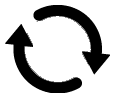
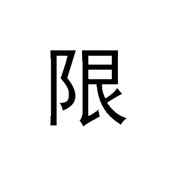
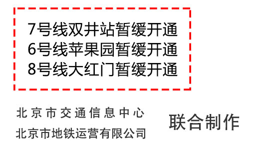
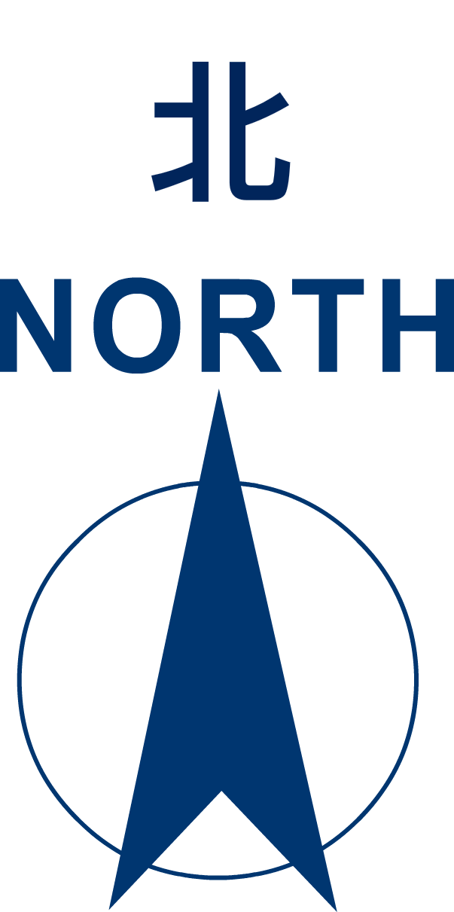
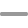

1号线
2号线
4号线大兴线
5号线
6号线
7号线
8号线北
8号线南
9号线
10号线
13号线
14号线(西)
14号线(东)
15号线
16号线
八通线
房山线
昌平线
亦庄线
燕房线
S1线
西郊线
机场线

安定门
从这站出发
到这站去
2号线
西直门—复兴门—西直门(外环)
首车 5:29 末车(全程) 22:50 末车(积水潭) 23:35
积水潭—复兴门—积水潭(内环)
首车 5:09 末车(全程) 22:20 末车(西直门) 23:08